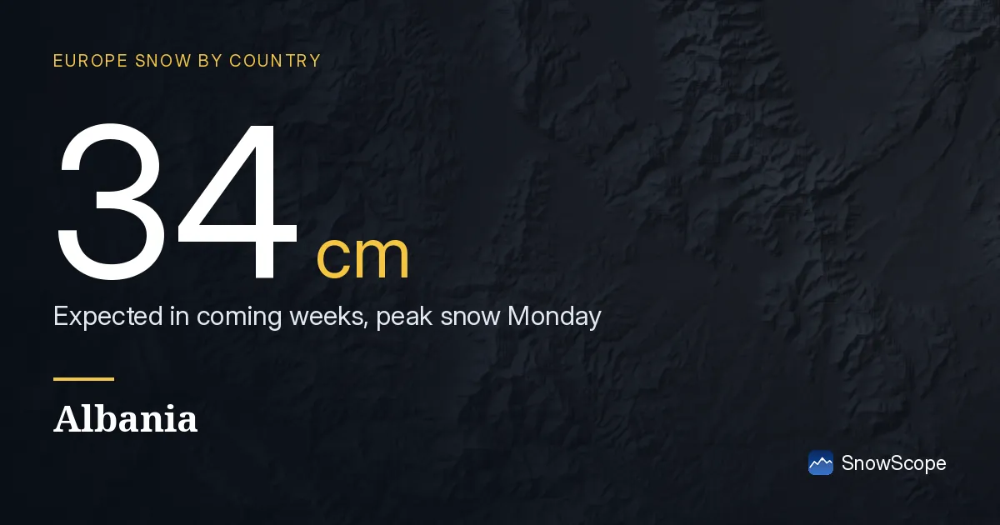

Albania: 34 cm expected in coming weeks, peak snow Monday
Albania's high peaks are catching their first serious snow of the season. The mountains above 1900 m now show 560 km2 of white cover, more than three times the area from a week ago, and a major storm arrives on Monday 23 November with 16 cm forecast for that day alone.
See the live snow forecast for Ski Pista Bigëll in the SnowScope appSnow depth, powder alerts and the 3D map, free.
Monday's heavy snow and what follows
Monday 23 November marks the strongest day in a multi-day snow event. SnowScope shows 16 cm will fall across the Albanian ranges that day, the peak of a weather system that is already underway and will continue through early December.
The first three days (through 24 November) will bring up to 18 cm total. Looking ahead a full week, the snowiest zones could see 34 cm by late November. This is the main winter window for the next two weeks; a quieter spell follows, then another 19 cm is possible in early December.
| Resort | Snow depth | New snow, 72 h | Coming, next days | Top |
|---|---|---|---|---|
| Ski Pista Bigëll | 0 cm | 0 cm | 1 cm | 1,678 m |

Snow already on the ground: the high mountains lead
Mount Korab, the Albanian Alps, and Mount Tomorr have all gathered 15 to 16 cm of fresh snow in the past three days (data to 21 November). The snow line sits at 1900 m, and above that height the cover is now widespread. Between 2000 and 2500 m, the mean depth is 3 cm and three-quarters of the land is white.
Below 1500 m, the ground remains bare. At 1500 to 2000 m, only one-fifth of the slopes have snow. This tells you where the best skiing conditions will be as the system unfolds: aim high, and expect rocks through thin patches on south-facing slopes at lower elevations for the next few days.

The speed of change across the country
One week ago, only 120 km2 of Albania's high terrain was snow-covered. Today, that figure has jumped to 560 km2, a fourfold rise. Yesterday alone, 220 km2 gained white cover. This rapid shift marks the moment when the dry season breaks and the first real winter system takes hold.
Early-season snow often settles quickly and can melt on warm afternoons. The thin base means consolidation will take a few days after Monday's peak. If you plan to travel to high passes, timing your trip for 24 November onward—after the heaviest snow has fallen and air temperatures have dropped—will give better conditions than moving during the storm itself.
Ski Pista Bigëll and lower elevations
The country's main ski resort, Ski Pista Bigëll, sits at 1678 m, just below the active snow line today. In the next three days, SnowScope forecasts only 1 cm there, as most snow will fall above 1800 m in the early phase. As the event deepens and cold air sinks, lower ground will start to catch snow.
Expect the resort area to remain marginal until midweek. By Friday and beyond, as temperatures fall further and storm clouds persist, accumulation at 1678 m should improve. Early-season runs will be thin and may expose rocks; patience is the smart move.
What neighbours are seeing
Montenegro to the north shows 11 cm at its leading resort and can expect 32 cm in the coming week. North Macedonia to the east has less snow now but forecasts 26 cm ahead. The entire region is entering the same storm window, so this is a broad weather system, not a local effect.
If you have a choice of where to ski in the next week, the higher ranges of all three countries will fill in together. The peaks above 2000 m from Albania through the Balkans will offer the best conditions by late November.
Timing your journey: a practical guide
Snow will begin on 22 November and intensify through Monday. The heaviest 24 hours arrive on 23 November. If you can wait until 24 or 25 November, you will find deeper snow, warmer temperatures below the cloud, and slopes consolidating rather than being loaded with fresh slides.
Above 2000 m, snow will be reliable and deep by then. Between 1500 and 2000 m, cover will be more complete. Only above these heights is skiing practical in the immediate term; below 1500 m, bare ground still dominates.
Tips for skiers
- Target elevations above 2000 m for the best and most stable snow. Wait until after Monday 23 November to travel—fresh snow on Monday will be followed by consolidation and further accumulation from the same system.
- Early-season snow at lower elevations (below 1800 m) is thin. Rocks and bare patches are likely on sunny slopes. Plan lower-elevation runs for late in the week when cold air has sunk and further snow has fallen.
- The snow line today is at 1900 m but will drop as the system deepens. North-facing slopes above 1800 m will fill in faster than south-facing terrain. Choose your route with this in mind.
- If skiing off-piste, check the official avalanche bulletin before heading out. Fresh snow on Monday will load slopes; wait for forecasts and local advice before committing to steep terrain in the first 24 hours after the peak.
- Use the SnowScope map daily over the next week to track which valleys and peaks fill in first. The map will show you in real time where the snow line drops and which zones are building the deepest pack.
About these numbers
Resort snow depths are the deepest snow on the resort's upper slopes on the date shown; they are estimates for an area, not a measurement at one point. Forecasts can change. Always read the official avalanche bulletin before going off-piste.
Cite this report
For research, teaching or the press: the numbers and charts are free to reuse under CC BY 4.0 with this citation.
SnowScope (2026), Albania: 34 cm expected in coming weeks, peak snow Monday, https://snowscope.app/blog/en/2026/11/albania-snow-on-the-way-21-november-2026.html, accessed 2026-11-21
SnowScope (Atlas Labs). (2026, November 21). Albania: 34 cm expected in coming weeks, peak snow Monday. SnowScope snow reports. https://snowscope.app/blog/en/2026/11/albania-snow-on-the-way-21-november-2026.html
BibTeX
@misc{snowscope2026albaniasnowontheway21nov,
author = {{SnowScope (Atlas Labs)}},
title = {Albania: 34 cm expected in coming weeks, peak snow Monday},
year = {2026},
month = nov,
howpublished = {\url{https://snowscope.app/blog/en/2026/11/albania-snow-on-the-way-21-november-2026.html}},
note = {Published 2026-11-22 10:03 UTC; accessed 2026-11-21}
}· CC BY 4.0 · Methods, data and tools →
Ski Pista Bigëll: snow and temperature by height, this winter vs last (tools) →
Follow Ski Pista Bigëll
Free: a message when fresh snow is coming, and the forecast every morning.
More snow reports

Savin Kuk above Žabljak picked up 22 cm of snow from 13 to 19 November and still has 6 cm today. Kolašin 1450 and 1600 are bare. The week day by day, and the next chances.

Up to 30 cm of snow fell on northern Velebit and Bjelolasica on Friday 13 November 2026. By Tuesday it was gone. Day by day, what the mountains kept, and when snow comes back.

Only Borovets and Bansko have a trace of snow at the top today, 2 cm each. A week ago Borovets had 11 cm. Day by day, and the one snowy day in the forecast.